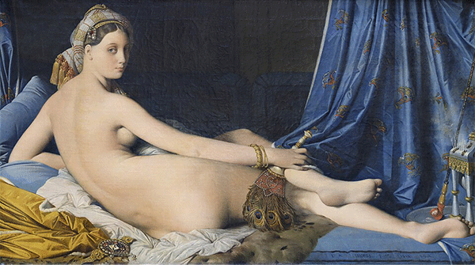
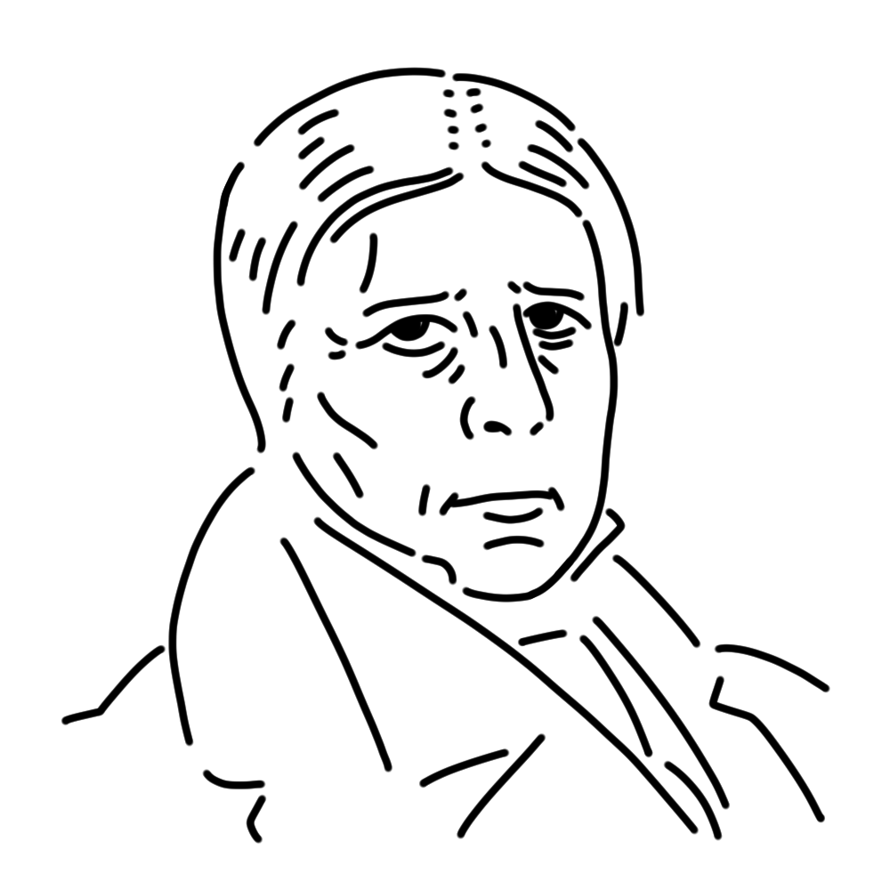

ダヴィッドの後継者として活躍した新古典主義のミューズ。計算され尽くされた画面づくりは冷徹ですらあり、感情を重んじるロマン主義のドラクロワとはいつもケンカばかりしている。
フランス王国
"泉"
"トルコ風呂"
"グランド・オダリスク" etc.

オダリスクとは、イスラム社会のハーレムにて君主に奉仕する女奴隷のこと。蠱惑的な女性が誘うような目でこちらを見つめている。明らかに長い胴体など、肉体の描写は正確ではないのだが、これは古典であるマニエリスム絵画の影響とされている。とはいえ当時の美術界からは酷い絵として猛烈なバッシングを受けてしまった。
制作年
1814年
技法・材質
油彩、カンヴァス
寸法
88.9 cm x 162.56 cm
所蔵
ルーヴル美術館（フランス）

フランス新古典主義を代表する画家の一人。ダヴィッドに学び、精緻な線描と理想化された肉体美でその後のフランス画壇を牽引した。晩年はアカデミーの重鎮になり、上院議員にも就任するなど周囲から支持されつつも、80歳を超えてなお裸婦画を制作するなどその創作意欲は生涯衰えることがなかった。バイオリンをこよなく愛し、「本職並みに達者な趣味」を指す「アングルのバイオリン」という言葉が今も残っている。
Jean-Auguste-Dominique Ingres
1780年8月29日
1867年1月14日(86歳没)